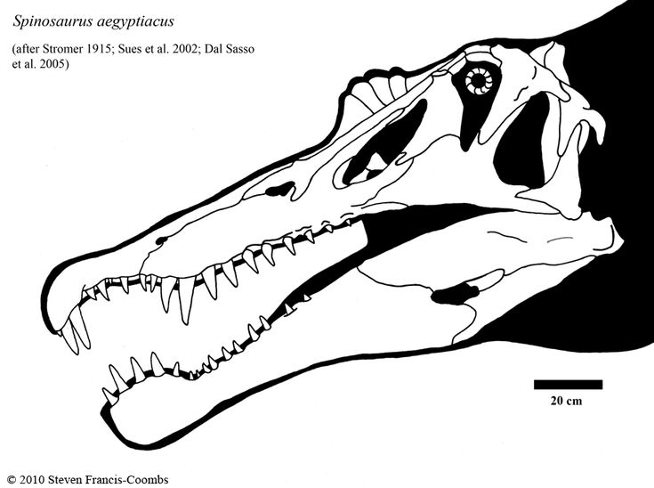
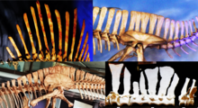
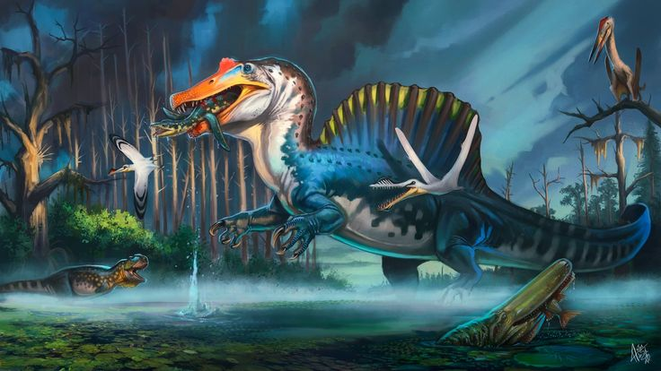

Spinosauridae é uma família de dinossauros terópodes que se destaca por suas características únicas e adaptações aquáticas. Esses dinossauros viveram principalmente durante o período Cretáceo, há aproximadamente 112 a 93 milhões de anos, e são conhecidos por suas longas mandíbulas, focinhos semelhantes aos de crocodilos e, em alguns casos, espinhas dorsais altas que formavam uma vela ou crista.
Os espinossaurídeos são conhecidos por serem dinossauros incomuns entre os terópodes, com adaptações claras para uma dieta piscívora (alimentação à base de peixes) e um estilo de vida semi-aquático:
Crânio Alongado e Focinho Similar ao de Crocodilos: Eles tinham mandíbulas longas e estreitas, equipadas com dentes cônicos, sem serrilhas, adaptados para agarrar peixes, semelhante aos dentes dos crocodilos modernos.
Espinha Dorsal Alta: Alguns espinossaurídeos, como o Spinosaurus, tinham longas vértebras neurais que formavam uma espécie de vela dorsal. Essa estrutura poderia ter sido usada para termorregulação, exibição social ou talvez para ajudar na natação.
Adaptado para Ambientes Aquáticos: Diferentemente de outros terópodes, os espinossaurídeos têm características que sugerem que passavam muito tempo na água, como narinas posicionadas mais para trás no crânio, pés adaptados para nadar, e um corpo hidrodinâmico.
Tamanho Enorme: Alguns espinossaurídeos, como o Spinosaurus, são considerados os maiores dinossauros carnívoros conhecidos, superando o tamanho de outros predadores famosos como o Tyrannosaurus rex. O Spinosaurus podia atingir mais de 15 metros de comprimento.

Os espinossaurídeos são considerados os principais dinossauros piscívoros. Suas mandíbulas especializadas e focinhos longos eram ideais para capturar peixes, mas eles também poderiam caçar outros animais terrestres menores, incluindo dinossauros herbívoros. Existem indícios de que eles eram predadores oportunistas, adaptando sua dieta com base na disponibilidade de presas em seus habitats aquáticos e terrestres.
Estudos recentes sugerem que o Spinosaurus passou uma parte significativa de sua vida na água, nadando com a ajuda de suas patas adaptadas e possivelmente usando a cauda larga para impulsão, semelhante a animais modernos como os crocodilos.
Os fósseis de espinossaurídeos foram encontrados em várias partes do mundo, o que indica uma distribuição ampla:
África: Fossilizações de Spinosaurus foram encontradas no Egito e no Marrocos, regiões que durante o Cretáceo continham vastas redes de rios e áreas alagadas, o ambiente perfeito para esses predadores aquáticos.
Europa: O Baryonyx foi descoberto na Inglaterra, o que indica que espinossaurídeos também estavam presentes em regiões que hoje compõem a Europa.
América do Sul: O Irritator foi encontrado no Brasil, sugerindo que os espinossaurídeos habitavam também partes da América do Sul.
O Spinosaurus aegyptiacus é talvez o membro mais famoso da família, conhecido por sua vela dorsal e enorme tamanho, que chegava a ultrapassar 15 metros de comprimento. Ele habitou o que hoje é o norte da África e é um dos poucos dinossauros claramente adaptados para uma vida semi-aquática, sendo capaz de nadar e caçar tanto em ambientes aquáticos quanto terrestres. A famosa vela dorsal do Spinosaurus ainda é um mistério. Algumas teorias sugerem que ela poderia ter sido usada para atrair parceiros ou para regular a temperatura corporal, enquanto outras sugerem que poderia ter funcionado como uma espécie de barbatana para ajudar na natação. O Spinosaurus é frequentemente comparado ao T. rex em termos de tamanho e força, mas, ao contrário do T. rex, ele parecia ser mais especializado em caçar presas aquáticas.
Descoberto na Inglaterra, o Baryonyx walkeri era menor que o Spinosaurus, mas apresentava características semelhantes, como o focinho alongado e dentes cônicos. Fósseis de Baryonyx mostram que ele tinha uma dieta piscívora, com escamas de peixe e ossos de dinossauros herbívoros encontrados em seu estômago.
O Suchomimus tenerensis viveu na África e é conhecido por suas mandíbulas de crocodilo e hábitos piscívoros. Embora não tivesse uma vela tão proeminente quanto o Spinosaurus, tinha longas vértebras dorsais que indicam a presença de uma crista moderada.
Descoberto no Brasil, o Irritator challengeri foi inicialmente identificado com base em um crânio bastante completo. Com um focinho estreito, dentes cônicos e outras características típicas dos espinossaurídeos, ele também é considerado um predador que caçava principalmente peixes. Estima-se que o Irritator poderia atingir até 8 metros de comprimento, embora os fósseis encontrados sejam fragmentários. Seu nome curioso, Irritator, foi dado pelos paleontólogos devido à "irritação" que tiveram ao descobrir que o crânio fossilizado, originalmente encontrado por colecionadores de fósseis, havia sido adulterado com gesso para parecer mais completo.
Assim como muitos outros dinossauros, o Spinosaurus foi extinto no final do período Cretáceo, durante o evento de extinção em massa que ocorreu há cerca de 66 milhões de anos. Esse evento, que provavelmente foi causado por um impacto de asteroide combinado com atividade vulcânica e mudanças climáticas, eliminou grande parte da vida na Terra, incluindo os ambientes aquáticos em que o Spinosaurus prosperava.
O primeiro fóssil de Spinosaurus foi descoberto em 1912 pelo paleontólogo alemão Ernst Stromer no Egito. Infelizmente, os fósseis originais foram destruídos durante a Segunda Guerra Mundial. No entanto, novas descobertas e reconstruções fósseis ao longo das décadas têm revelado cada vez mais detalhes sobre este dinossauro singular.
Em 2014, fósseis adicionais encontrados no Marrocos sugeriram que o Spinosaurus tinha patas traseiras relativamente curtas e uma cauda adaptada para nadar, reforçando a teoria de que ele era um predador semi-aquático. Esses achados mudaram a visão dos paleontólogos sobre o comportamento e o estilo de vida deste incrível dinossauro.
O Spinosaurus foi o primeiro dinossauro conhecido que tinha adaptações claras para um estilo de vida semi-aquático, algo muito raro entre os terópodes carnívoros.
A famosa vela dorsal do Spinosaurus ainda é um mistério. Algumas teorias sugerem que ela poderia ter sido usada para atrair parceiros ou para regular a temperatura corporal, enquanto outras sugerem que poderia ter funcionado como uma espécie de barbatana para ajudar na natação.
O Spinosaurus é frequentemente comparado ao T. rex em termos de tamanho e força, mas, ao contrário do T. rex, ele parecia ser mais especializado em caçar presas aquáticas.